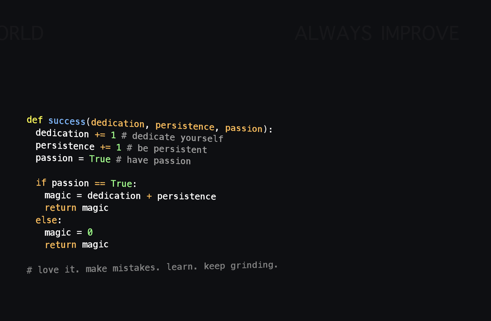

Work experience and Projects

EDUCATION
CGPA: 8.8/10, Bachelor of Science - Computer Science (JUN 2017 - SEP 2020)
Team Lead - Swatch bharath Event at Undergrad level (JAN 2019)
Student worker & Volunteer Work - community service projects to support underprivileged children FEB 2020
WORK EXPERIENCE
Senior Systems Associate, Infosys Limited, India (June 2021 – May 2023) :
- Spearheaded cross-functional collaboration with project managers to establish ambitious yet realistic coding milestones on pre-release software projects, ensuring timely delivery and exceeding client expectations.
- Collaboration across departments with other technical departments while maintaining independence, attention to detail and focus on execution and implement high-availability solutions for mission-critical applications, resulting in a 50% reduction in system downtime and improved customer satisfaction.
- Introduced and worked in an agile environment to deliver 90% high-quality software and effective development practices to enhance product development to test and resolve issues raised while operating the web application.
- Defined, improved, and migrated contract as needed for the aforementioned APIs. Create and maintain software documentation.
- developed & enhanced the performance of existing features by 70% with help of multi-tier architecture, by migrating APIs developed in .Net to Java using Java technology, Spring boot, Gradle, ORM – Hibernate/JPA. All the APIs are deployed in the QA section with 100% test coverage.
- Responsible for developing new microservices which reduced the load by 40% on the Servers, Microservices are built using spring boot, Restful APIs which include secure coding, web application security. Integrated a relational database MySQL using Spring Data JPA for efficient data management. .
PROJECTS
3PFO- Dot Net to Java PCF migration
First Clearing App
SKILLS & LEADERSHIP
- Programming & Scripting Languages: JAVA,Python(Basic) ,JavaScript, Typescript, Node.js
- Web Expertise: Angular, HTML, CSS, Git
- Frameworks & Databases: Spring boot,MySQL, Gradle, GitHub, Apache, Maven, Tomcat, Jenkins
- Expertise: IntelliJ, Eclipse IDE, Visual Studio
- Strong in communication and effectively deals with technical challenges and corresponding solutions.
Extra Curricular Activities & Volunteer
Certifications & Achievements
- Successfully completed Infosys Java developer program certificationInfosys Certified Java Developer
- Successfully completed AI 900 CERTIFICATION
- Completed Global Agile Developer certification from InfosysInfosys Agile Globel developer
- Infosys Ethical Hacker certification